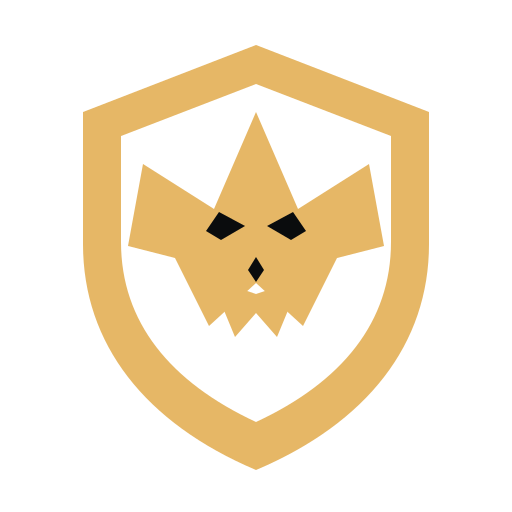
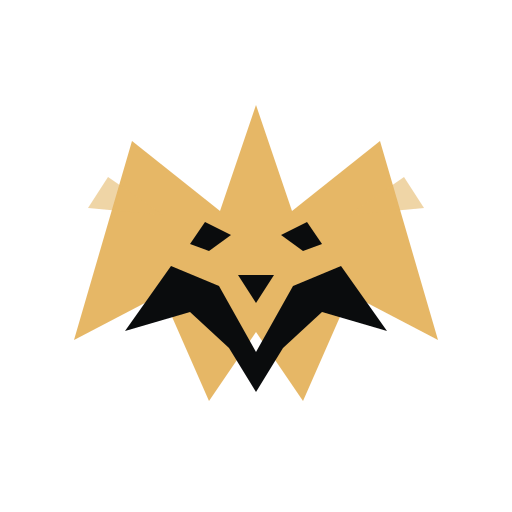
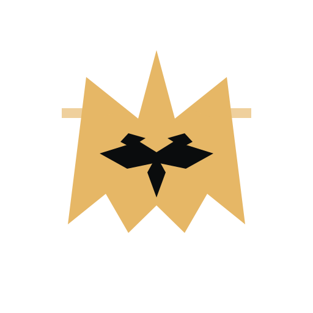

01 / FANG SHIELD

尖锋盾章
WOLF × KNIGHT × HONOR
最完整的品牌徽章方向。外部盾形保留骑士感，内部狼首更具攻击性，适合球队、硬件和比赛复盘产品。
适合：球队徽章 / 护臂 / 球衣
本轮只做 Logo 提案，没有改动主站。三套方案都保留狼、骑士、速度和本能的核心语义，但分别控制在不同的品牌气质里。

最完整的品牌徽章方向。外部盾形保留骑士感，内部狼首更具攻击性，适合球队、硬件和比赛复盘产品。

更抽象、更像潮流运动品牌的符号。左右结构强调团结，整体轮廓同时接近狼首、字母 W 和前进的箭头。

最极简、最容易记忆的一版。只保留耳朵、眼睛、鼻梁和獠牙，适合夜光裁切，也更容易形成高级运动品牌识别。